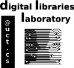

|
 |
Lighton Phiri
Centre for ICT for Development
|
|
I am a Ph.D. student in the Department of Computer Science at the University of Cape Town. I am based in the Centre for ICT for Development, where I work under the supervision of Professor Hussein Suleman. I am currently in the process of scoping my doctoral research, but my current research interests are in the Technology Enhanced Learning space. In addition, my other research interests span through systems-based Computer Science--Digital Libraries, Information Retrieval and Data Storage Infrastructure--, Computer Science Education and Software Engineering. |
Publications
Conference Proceedings
- Flexible Design for Simple Digital Library Tools and Services (with Hussein Suleman). In Proceedings of the 2013 South African Institute for Computer Scientists and Information Technologists (SAICSIT ’13). October 2013. East London, South Africa.
- Bonolo: A General Digital Library System for File-based Collections (with Kyle Williams, Miles Robinson, Stuart Hammar and Hussein Suleman). In Proceedings of the 14th International Conference on Asia-Pacific Digital Libraries (ICADL ’12). November 2012. Taipei, Taiwan.
Journal Articles
- In Search of Simplicity: Redesigning the Digital Bleek and Lloyd (with Hussein Suleman). Published in DESIDOC Journal of Library & Information Technology (DJIT). July 2012.
Posters
- SimplyCT: A Lightweight Digital Library Framework (with Hussein Suleman). 2010 Annual Research Conference of the South African Institute of Computer Scientists and Information Technologists. Postgraduate Symposium (SAICSIT ’11). September 2011. Cape Town, South Africa.
Technical Reports
- Benchmarking a File-based Digital Library System Repository Architecture (with Hussein Suleman). Technical Report CS13-04-00, Department of Computer Science, University of Cape Town. July 2012
Theses& Dissertations
- Simple Digital Libraries MSc, Department of Computer Science, University of Cape Town. December 2013
Projects
| Bonolo Project | 2011 | |
| CCA Collections | 2012 | |
| SURE Programme | 2012 | |
| SARU Database | 2012 | |
| SCAP Programme | 2012 | |
| ETD Portal | 2014 |
Contact
Lighton Phiri
Department of Computer Science
University of Cape Town
Rondebosch 7701
Cape Town, South Africa
Email:
(@ 'lphiri '(cs uct ac za))
Web: http://people.cs.uct.ac.za/~lphiri
::: Last updated on March 15, 2014 11:29:33 GMT+0200 :::